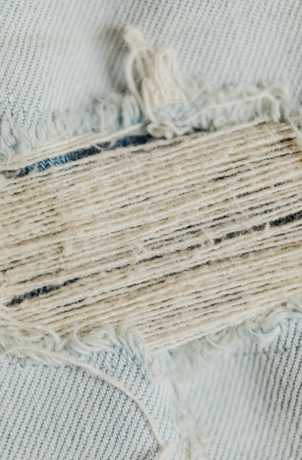

Why?
We believe that far too many articles of clothing end up in the landfill each year. Did you know that millions of tons of clothing and fabric end up in the landfill each year? This material can take hundreds of years to decompost. This is only getting worse with the amount of fast fashion brands out there. There are so many ways to help with this problem, and Recycle-Me-Mini is going to show how you can too!
You may be wondering, What can be recycled? The answer is, any material that is in good condition. The buttons on a blouse, the cuffs of a sleeve, any part of the item of clothing that is not ripped, worn through, stained or unable to be patched up in a reasonable way.